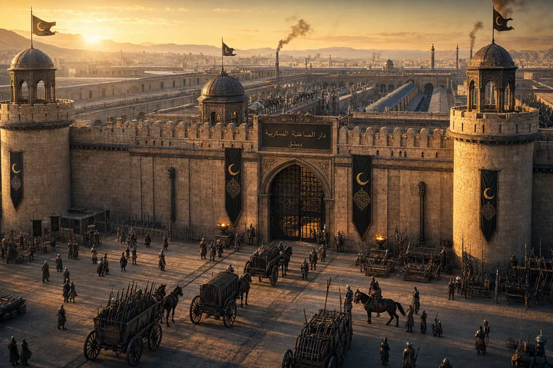
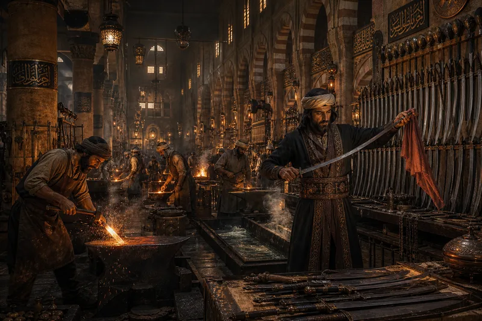
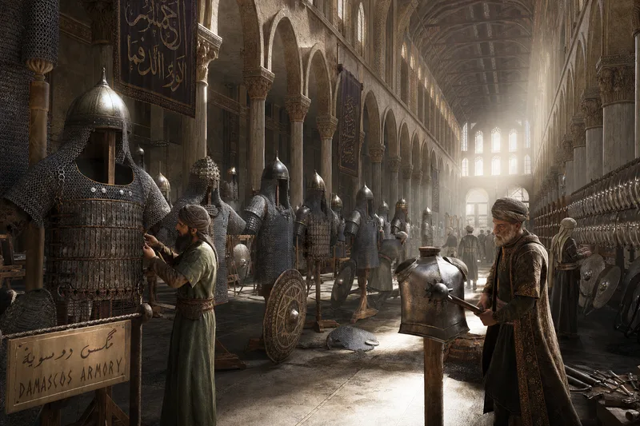
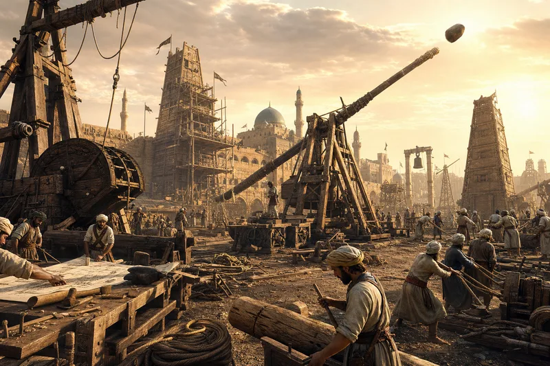
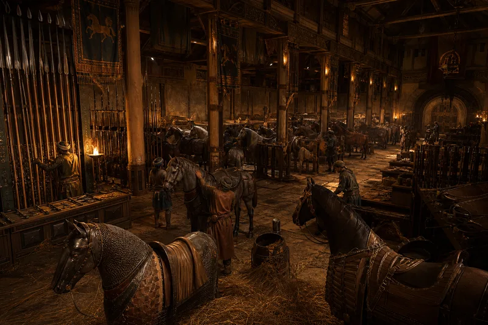
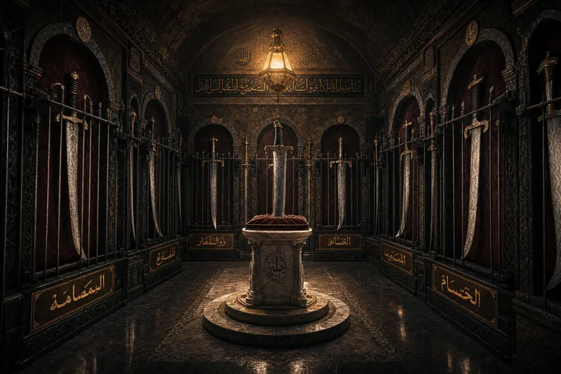

| LOCATION | Southeast Damascus · fortified compound · 400m × 300m · 12 workshops |
| WORKFORCE | 2,200 smiths, armorers, carpenters, leather-workers, engineers |
| SECURITY | 4 watchtowers · garrison of 200 guards · entry by seal only |
| OUTPUT | Full equipment for 10,000 soldiers per year — sword, shield, armor, helmet, boots |
| MASTER | Khalid al-Hadid — "Khalid the Iron" — 40 years at the forge · has never held a blade in anger |

| THE PROCESS | Wootz ingots from India · 200+ folds · the watered pattern appears only when the steel agrees |
| HEAT | 1,300°C · charcoal from specific oak · bellows operated by two men in rotation |
| THE TEST | A finished blade must cut a falling silk scarf. If it catches, it is reforged. If it tears, it is melted. |
| QUENCHING | Oil, not water. The composition of the oil is a family secret. Three families know. They do not speak to each other. |
| DAILY OUTPUT | 100 swords · 200 daggers · 50 spearheads — each marked with the smith's personal stamp |

| CHAINMAIL | 40,000 riveted rings per shirt · 15 kg · build time: 3 months per hauberk |
| LAMELLAR | Overlapping steel plates laced with leather · lighter · used by cavalry |
| HELMETS | Spangenhelm with nose guard · aventail of mail protecting neck and face |
| SHIELDS | Round · 80cm diameter · layered wood + leather + steel boss · weighs 4 kg |
| THE FITTING | Every officer's armor is fitted individually. A loose ring is a dead man's ring. |

| TREBUCHETS | Counterweight type · range: 300m · 150 kg projectiles · disassembles for transport on 8 camels |
| MANGONELS | Torsion-powered · lighter · faster rate of fire · used for suppression |
| BATTERING RAMS | Iron-capped cedar log · wheeled housing with wet hide roof · crew of 40 |
| SIEGE TOWERS | 4 stories · wheeled · drawbridge at top · carries 100 soldiers to wall height |
| ENGINEERS | 200 specialist siege engineers · trained in mathematics and physics · the only soldiers who read |

| ARABIAN HORSES | 800 warhorses stabled · bred for endurance, not size · the desert made them |
| BARDING | Chainmail + leather · covers chest, neck, flanks · weight: 25 kg · the horse does not notice |
| LANCES | 3.5m ash wood · steel tip · single-use on impact · racks hold 2,000 |
| CAVALRY SWORDS | Lighter than infantry · curved · optimized for mounted slashing · the ancestor of the scimitar |
| SADDLES | High cantle · deep seat · stirrups (the innovation that changed cavalry forever) · leather + wood frame |

| THE COLLECTION | 47 named blades · each displayed on velvet · each with Arabic calligraphy nameplate |
| THE CALIPH'S SWORD | Center pedestal · "Al-Samsama" · the watered pattern forms a verse from the Quran · nobody planned this |
| AL-BATTAR | The Cutter · 400 years old · belonged to 7 generals · outlived them all |
| SECURITY | Iron bars · 4 guards · the vault key is held by the Caliph personally |
| THE SECRET | Damascus steel's exact recipe died with the last master in 1750. The blades in this vault are irreplaceable. Every one of them is the last of its kind. |